THANH NỐI DẪN ĐỘNG LÁI > THÁO |
| 1. NGẮT CÁP ÂM RA KHỎI ẮC QUY |
| 2. ĐẶT CÁC BÁNH TRƯỚC HƯỚNG THẲNG VỀ PHÍA TRƯỚC |
| 3. THÁO CỤM MẶT VÔ LĂNG |
| 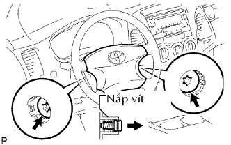 |
Hướng các bánh trước thẳng bằng cách xoay vôlăng.
Dùng chìa hoa khế T30, nới lỏng 2 vít cho đến khi rãnh dọc theo chu vi của vít khớp vào vỏ vít.
| 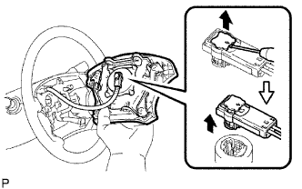 |
Kéo mặt vôlăng ra khỏi vôlăng và đỡ mặt vôlăng bằng một tay như trong hình vẽ.
Dùng tôvít, tháo giắc nối túi khí.
Tháo giắc nối còi và tháo mặt vôlăng.
| 4. THÁO CỤM VÔ LĂNG |
| 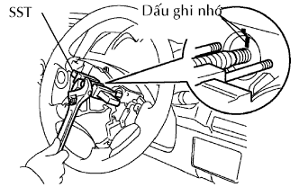 |
Tháo đai ốc bắt vô lăng.
Đánh các dấu ghi nhớ trên vô lăng và trục lái chính.
Dùng SST, tháo vô lăng.
| 5. THÁO NẮP CHE PHÍA DƯỚI TRỤC LÁI |
| 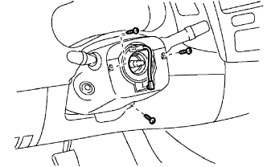 |
Tháo 3 vít và nắp che phía dưới.
| 6. THÁO NẮP CHE PHÍA TRÊN TRỤC LÁI |
| 7. THÁO CỤM CÔNG TẮC GẠT NƯỚC KÍNH CHẮN GIÓ |
| 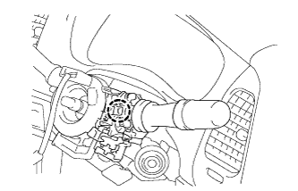 |
Tháo các giắc nối.
Nhả khóa cài và tháo công tắc gạt nước.
| 8. THÁO CỤM CÔNG TẮC CHẾ ĐỘ ĐÈN PHA |
| 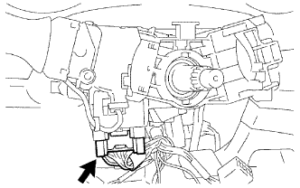 |
Ngắt giắc nối.
| 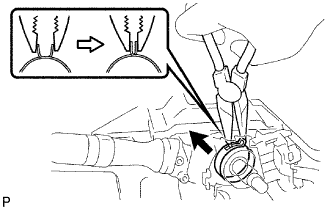 |
Dùng k´m mũi nhọn, tháo kẹp như trong hình Vẽ.
| 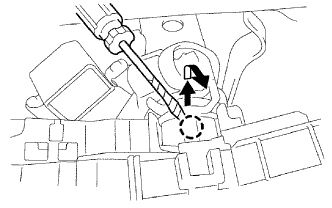 |
Dùng tôvít, tách khóa cài và tháo công tắc.
| 9. THÁO CÁP XOẮN |
| 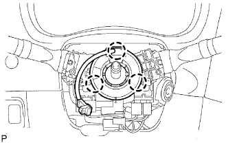 |
Tháo các giắc nối ra khỏi cáp xoắn.
Tách 3 khóa cài và tháo cáp xoắn.
| 10. THÁO BÁNH XE TRƯỚC |
| 11. THÁO NẮP CHE PHÍA DƯỚI ĐỘNG CƠ NO.2 |
Tháo 4 bu lông và nắp che phía dưới.
| 12. THÁO NẮP CHE PHÍA DƯỚI ĐỘNG CƠ NO.1 |
Tháo 4 bu lông và nắp che phía dưới.
| 13. THÁO THANH GIẰNG DẦM DỌC TRƯỚC ĐẾN DẦM NGANG HỆ TREO TRƯỚC |
Tháo 8 bu lông và thanh giằng dầm ngang xe.
| 14. THÁO THANH ỔN ĐỊNH PHÍA TRƯỚC |
Tháo thanh ổn định phía trước ra khỏi thân xe.
| 15. THÁO ĐẦU THANH NỐI BÊN TRÁI |
| 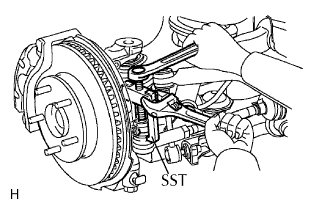 |
Tháo chốt chẻ và đai ốc.
Dùng SST, tháo đầu thanh nối ra khỏi cam lái.
| 16. THÁO ĐẦU THANH NỐI BÊN PHẢI |
| 17. THÁO CỤM TRỤC LÁI TRUNG GIAN NO.2 |
| 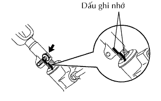 |
Đánh các dấu ghi nhớ lên trục trung gian và thanh nối dẫn động lái.
Tháo bu lông và trục trung gian ra khỏi thanh nối dẫn động lái.
| 18. THÁO CỤM ỐNG CẤP ÁP |
| 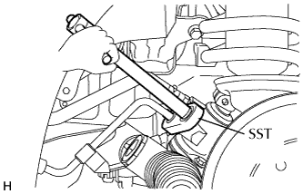 |
Dùng SST, nới lỏng đai ốc và ngắt ống cấp áp.
| 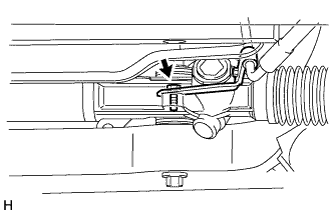 |
Tháo bu lông và ngắt ống cấp áp ra khỏi thanh dẫn động lái.
| 19. THÁO ỐNG HỒI ĐẦU RA HỘP CƠ CẤU LÁI |
| 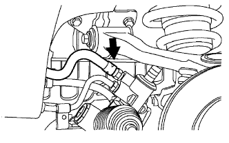 |
Nhả khớp kẹp và ngắt ống hồi ra.
| 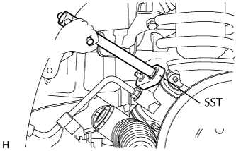 |
Dùng SST, tháo ống hồi đầu ra.
| 20. THÁO CỤM THANH NỐI DẪN ĐỘNG LÁI |
| 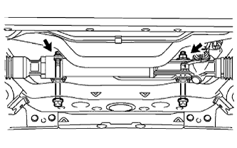 |
Cố định 2 đai ốc và tháo 2 bu lông. Sau đó tháo thanh nối dẫn động lái ra khỏi khung xe.